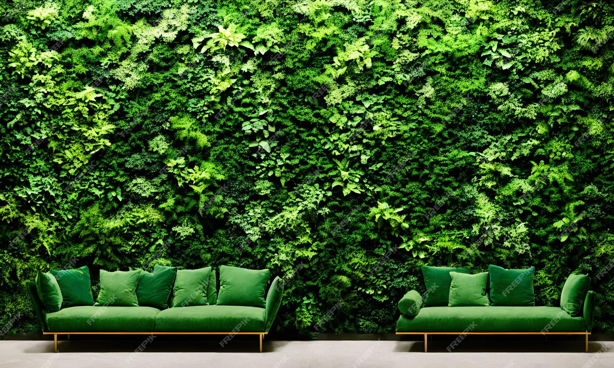

Toits et Murs Végétalisés
Nous créons des espaces verts innovants pour vos toitures et murs.
Un exemple de murs végétalisé conçu par Lucas Jardins.
Pourquoi choisir un toit ou un mur végétalisé ?
- Améliore l'isolation thermique et acoustique.
- Favorise la biodiversité en milieu urbain.
- Réduit la pollution et absorbe le CO₂.
- Apporte une touche esthétique et naturelle à votre bâtiment.
Nos services de végétalisation
Lucas Jardins vous accompagne dans la création et l’entretien de vos espaces verts en hauteur.
- Étude et conception : Analyse de la structure du bâtiment et choix des végétaux adaptés.
- Installation sur mesure : Mise en place de systèmes de drainage et d’irrigation intégrés.
- Entretien régulier : Suivi et maintenance pour assurer la pérennité de votre toiture végétale.